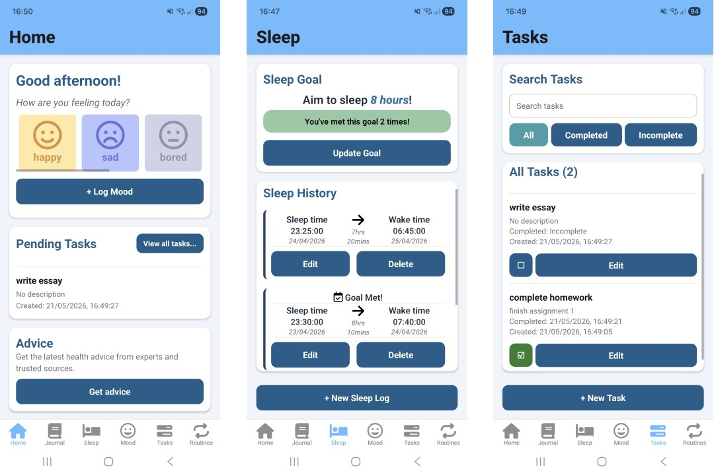
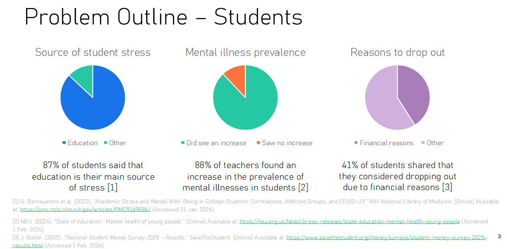
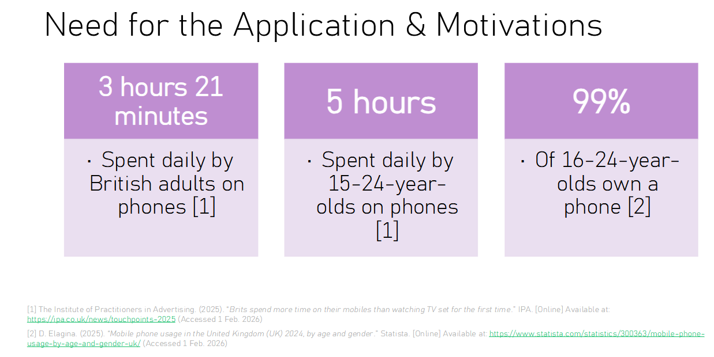
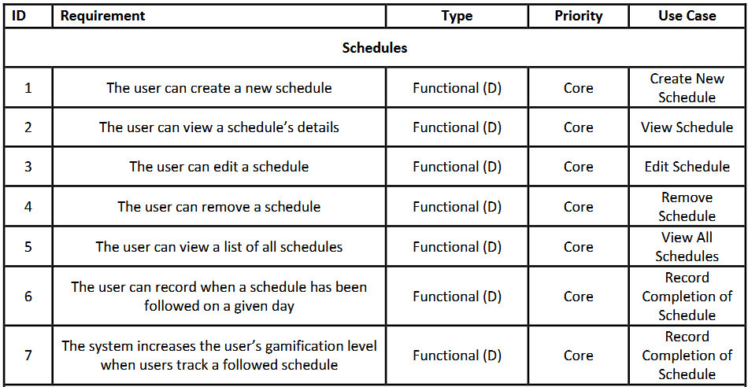
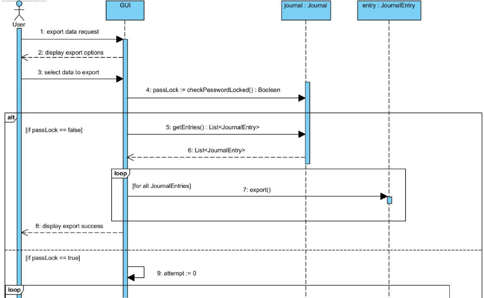

Student Wellbeing App — "StuZen"
React Native, Expo, TypeScript, SQLite, Visual Paradigm
Group project for ECS506U Software Engineering at Queen Mary, University of London, from January 2026 to April 2026.
Back to PortfolioSummary
This group project was for a module in my second year at QMUL Computer Science. Working in a group of 6, we had to develop an application from the inital concept to a functional prototype. The project was broken down into 4 stages — Domain Analysis, Requirements Elicitation, Design, Prototype — with each stage being presented to our client.

Domain Analysis
Problem Statement
A significant proportion of young people suffer from mental health issues. With students in particular, many state that their sources of stress comes from education and finanical struggles. The majority of young people are unable to access the support they need that could help them thrive in education.

Many young people's mobile phone usage is comparable to behavioural addiction. Screen time can be a key contributor to mental health, with many British people turning to the mental health app market to assist with their mental health needs — a market only expected to grow over the next few years.

Research
We conducted research on our target demographic, students. I researched the current mental health app market and young people's mobile phone usage, and how it affects our motivations for developing our app. We also researched the mental health app market and competing software currently available. Our research was summarised into our report, highlighting the key issues that young people and students face today and how our application will tackle those problems.
Solution
Our group discussed the ideal solution to the issues we found and decided on some key features for our application, including:
- Sleep and mood tracking
- Daily journalling
- Routine and task management
- External advice pages
- Focus on privacy
We also found that many competing applications in the mental health market did not specifically target students' needs, as well as not being fully privacy-oriented, with incidents of private health data being shared for profit. Therefore, in our application, all data will be stored locally on the user's device.
Requirements Elicitation
We created a UML use case diagram in Visual Paradigm with all of the necessary features of our application, as well as describing key use cases with their alternate flows to our client during the presentation. We also made a risk assessment for our project's development.
I worked on establishing our core functional requirements. The rest of my team focused on non-functional requirements and a risk assessment of our project.

Design
We created a UML class diagram in Visual Paradigm to describe relationships between the parts of our application, dicussed our design decisions and design patterns to use.
I worked on a UML sequence diagram in Visual Paradigm to show the process of exporting journal entry data from the application.

Prototype
Over 6 weeks, our group developed a fully-functional, cross-platform prototype application using the Expo framework in React Native. We used Git and GitHub for version control.
I worked on the sleep tracking feature: allowing the user to add, edit, and delete sleep logs from a local SQLite database, set a sleep goal and update the screen to show how many times the goal was met. I also worked on the GUI, making all UI components consistently styled across the application.
Personal Reflection
This semester-long group project gave me a lot of insight into how software is developed from start to finish. We worked well as a team to work on and present our findings throughout, even when working with tight deadlines. I am pleased with the outcome of this project — our presentations were well-received by our client and received top marks.
For our prototype, we did not include every feature mentioned in our design, but we laid the groundwork for the project to be iteratively developed in the future.
I had never used the Expo framework, nor React Native (only React), so I learnt a lot about mobile-specific development and the unique considerations that have to be made for native mobile apps. For example, the use of safe areas to ensure that app content does not overlap with the phone's interface.
I have gained valuable experience in mobile app development and I aim to put the knowledge I gained in this project towards my future projects and assignments.